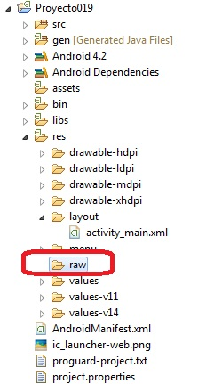
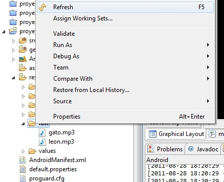
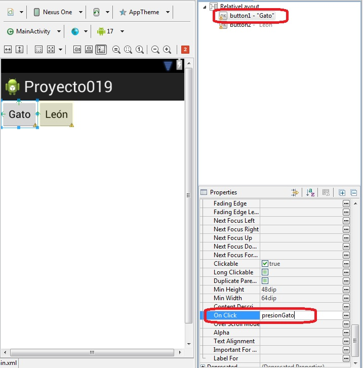

22 - Reproducción de audio (archivo contenido en la aplicación)Ya se encuentra disponible el nuevo tutorial para aprender android con el nuevo entorno Android Studio propuesto por Google y que remplaza a Eclipse. |
Veremos los pasos para reproducir un archivo mp3 (otros formatos soportados por Android son: Ogg, Wav)
Disponer dos botones con las etiquetas: Gato y León, luego cuando se presione reproducir el archivo de audio respectivo. Los archivos de sonidos almacenarlos en la misma aplicación.
Luego de crear el proyecto procedemos a crear una carpeta llamada raw que dependa de la carpeta res, almacenamos los dos archivos mp3 en dicha carpeta (para crear la carpeta presionamos el botón derecho del mouse sobre la carpeta res y seleccionamos new -> folder):
Luego de copiar los archivos a la carpeta debemos refrescar los archivos contenidos en el proyecto presionando el botón derecho del mouse y seleccionando la opción "Refresh":
Podemos comprobar que los dos archivos están referenciados en el proyecto.
Creamos una interfaz con dos botones e inicializamos las propiedades Text y On Click de cada botón:
El código fuente de la clase Proyecto019Activity.java es:
package com.androidya.proyecto019;
import android.app.Activity;
import android.media.MediaPlayer;
import android.os.Bundle;
import android.view.Menu;
import android.view.View;
public class MainActivity extends Activity {
@Override
protected void onCreate(Bundle savedInstanceState) {
super.onCreate(savedInstanceState);
setContentView(R.layout.activity_main);
}
@Override
public boolean onCreateOptionsMenu(Menu menu) {
// Inflate the menu; this adds items to the action bar if it is present.
getMenuInflater().inflate(R.menu.activity_main, menu);
return true;
}
public void presionGato(View v) {
MediaPlayer mp = MediaPlayer.create(this, R.raw.gato);
mp.start();
}
public void presionLeon(View v) {
MediaPlayer mp = MediaPlayer.create(this, R.raw.leon);
mp.start();
}
}
Cuando copiamos los archivos mp3 se genera luego en la clase R la referencia a los dos archivos y posteriormente los podemos rescatar cuando creamos un objeto de la clase MediaPlayer:
MediaPlayer mp=MediaPlayer.create(this,R.raw.gato);
Seguidamente llamamos al método start:
mp.start();
Este proyecto lo puede descargar en un zip desde este enlace: proyecto019.zip